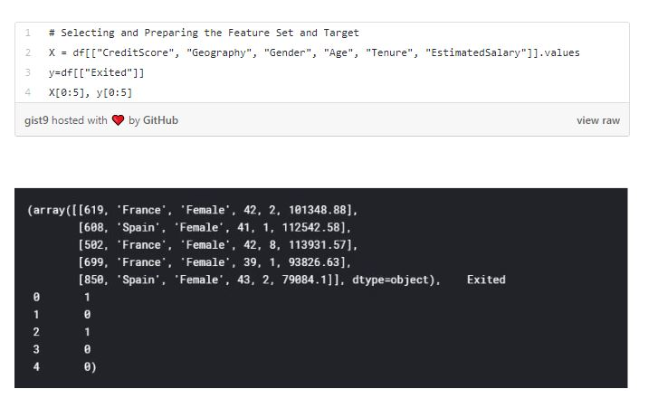
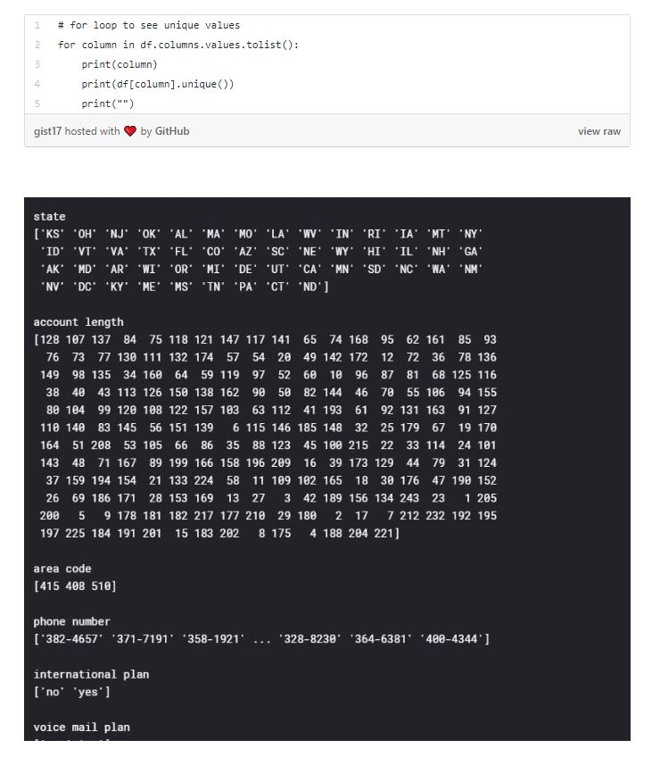
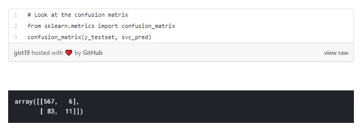

Customer Churn
Posted on January 10, 2020
Introduction
Brief Overview of Customer Churn Analysis and Prediction with Decision Tree Classifier.
Customer Churn is one of the most important and challenging problems for businesses such as Credit Card companies, cable service providers, SASS and telecommunication companies worldwide. Even though it is not the most fun to look at, customer churn metrics can help businesses improve customer retention.
We can classify customer churn (also known as customer attrition) by grouping them into different categories. Contractual Churn, which is applicable to businesses such as cable companies and SAAS service providers, is when customers decide not to continue with their expired contracts. Voluntary Churn, on the other hand, is when a customer decides to cancel their existing service, which can be applicable for companies such as prepaid cellphones and streaming subscription providers. There are also times when consumers leave a possible purchase without completing the transaction. We can categorize these instances as non-contractual churn, which is applicable for businesses that rely on retail locations, online stores or online borrowing services. And lastly, there is the involuntary churn, for instance where a customer can not pay their credit card bill and no longer stays with the credit card company.
The reasoning of customer churn can vary and would require domain knowledge in order to define properly, however some common ones are; lack of usage of the product, poor service and better price somewhere else. Regardless of the reasoning that can be specific for different industries, one thing applies for every domain is, it costs more to acquire new customers than it does to retain existing ones. This has a direct impact on operating costs and marketing budgets within the company.
Because of the significant importance of customer churn within a business, stakeholders are investing more time and effort in finding out the reasoning within their organizations, how they can accurately predict the type of existing customers that can stop doing business with them and what they can do to minimize the customer churn.
The best way to avoid customer churn is to know your customers, and the best way to know your customer is through historical and new customer data.
In this article, we will go through some consumer data and see how we can leverage data insights and predictive modeling in order to improve customer retention. In our analysis, we will use Python and variety of Machine Learning algorithms for prediction.
Our first customer data set is from a credit card company, where we are able review customer attributes such as gender, age, tenure, balance, number of products they are subscribed to, their estimated salary and if they stopped the subscription or not.
We can see our dataset but we also want to make sure the data is clean, so as part of the cleaning process, we look at missing values and data types.
When we look at the statistical insights, we see that the average age of our customers is 39, the average month customer has been a member is 5 and the estimated average salary is 100K.
When we look at the gender and geographic distribution of estimated salary, we see that male customer estimated average salary is higher than females in France and Spain, however in Germany female customers’ estimated average salary is higher.
When we look at the relationship between age and credit score, the linear relationship is very weak in order to clearly define correlation.
Based on our basic exploratory analysis, we can define the important customer attributes that can give us the best insight in order to predict the type of customers that can churn. We can continue this analysis to answer some basic questions such as, “Does lower estimated salary increase churn?” Or “Does lower Credit Score increase churn?” and so on. We can group and summarize the dataset in different ways to gain more insights from customer attributes. We will dive into more of these in the next dataset. For now, lets start thinking about predicting which customers will churn.
In this case, we can label our target (response) variable which is churn. This means we can create a classification model and perform different algorithm methods such as Decision Tree, Random Forest, Logistic Regression or Support Vector Machines. When it comes to machine learning models, we are looking for two main conditions; 1- Normal Distribution of the feature set, 2- Same Scale of the feature set.
In this dataset, we can select credit score, geography, gender, age, tenure and estimated salary attributes as the feature set and churn as the target variable.
We have to make sure we update the categorical variables to numerical variables as the machine learning techniques we will apply requires all customers attributes to be numerical.

We can further randomly split our dataset to training and testing dataset in order to fit our model with training dataset and test the predictions with the testing dataset. The idea is to train the model with the training dataset and test the prediction with the test dataset. If we didn’t use training and testing datasets and used the entire dataset instead, the algorithm will only make accurate predictions with our dataset and will fail with any new data that gets fed to it.
In this dataset, let’s use DecisionTreeClassifier and RandomForestClassifier to create our model and prediction, further evaluate them both to see which one is better.
Based on the metrics evaluations, while 73% of the predictions would be accurate with the Decision Classifier Model, 82% of the predictions would be accurate with the RandomForestClassifier. We would prefer to use Random Forest in this case.
When we look at the distribution of the customers that churn vs not churn, we see that the data is impartial. This means we can’t just rely on accuracy metric scores for the prediction models. Let’s look at the second customer data set to see if we can do better analysis and prediction models.
This time we are looking at a telecommunication company and it’s existing customer attributes such as their current plan, charges, location in terms of state, amount of customer service calls, account length and churn.
There are no missing data within the dataset and data types are correct. Let’s look at the categorical values and their unique values.
When we look at the state and churn we see that California and New Jersey are the top to states with the highest churn rate.
We also see that the churn rate is higher with the international plan customers and lower with the customers that have voice mail plan.
There are much more customers that are staying with the company than leaving the company as a customer. If you remember the earlier analysis with the credit card company, this means imbalances in the data and has an impact on the prediction model development. (One important aspect we did not mention earlier is that we have no use for unique identifiers such as phone number, customer id or account number for feature selection.)
Poor customer service is one of the well-known reasons for customer churn. In our case, we can see a strong positive linear relationship with the customer service call amount and churn rate.
With this dataset, let’s develop multiple different models and evaluate them to see which one would be the best fit to solve our business problem of customer churn.
Similar to the earlier credit card customer data set, we need to perform preprocessing and update the categorical variables to numeric variables in order to create our model.
Now we are ready to split the dataset to train/test and create our models. Let’s start with Random Forest.
Our accuracy score for Random Forest Model we created for predicting churn of the telecommunication company customers is 0.89. However, we should look analyze this further as the data is impartial.
We can review additional evaluation metrics, such as cross validation matrix which will give us the amount of true positives, false positives, true and false negatives, precision, recall and f1 score. We can also see what we can do improve the model by looking at what features contributes the most to the prediction.
The model predicts 560 True Negatives, 13 False Positives, 54 False Negatives, 40 True Positives.
When we evaluate the model with Random Forest Classifier, we see that: Precision score is 0.729, Recall score is 0.372, ROC curve is follows:
AUC score (the area under the roc curve) is 0.83 and f1 score is 0.49.
We also find out that, to get the best performance from the model, we need to set the n estimator to 30. (Currently, our model uses 100)
We can further look at the feature importance to see what features have the most impact on the prediction.
Best on the feature importance, we can definitely remove state from our model.
Let’s create another model using Support Vector Machine.
When we create the model and look at the accuracy, we already see that the accuracy score for Support Vector Machine is lower than Random Forest Classification.
When we create the model and look at the accuracy, we already see that the accuracy score for Support Vector Machine is lower than Random Forest Classification.
The model predicts 567 True Negatives, 6 False Positives, 83 False Negatives, 11 True Positives. Even though the False Positive count slightly went down, the True Positives are significantly less compared to RandomForestClassifier.
Both the precision score(0.647) and recall score(0.11) is much lower than the Random Classifier. The area under the roc curve (auc) is 0.83 which is the same as the Random Forest Classifier. The best option for Support Vector Machine degree is 1. (which is currently set as the default value of 3).
Based on the two predictive models we created the first one we created with Random Forest Classifier would be a better choice. We can also tune this model and improve it by updating the n_estimator and removing state variable from the feature set for better prediction.
With the existing consumer insights through data, companies can predict customers’ possible needs and issues, define proper strategies and solutions against them, meet their expectations and retain their business. Based on the predictive analysis and modeling, businesses can focus their attention with targeted approach by segmenting and offering them customized solutions. Analyzing how and when the churn is happening in customer’s lifecycle with the services will allow the company to come up with more preemptive measures.